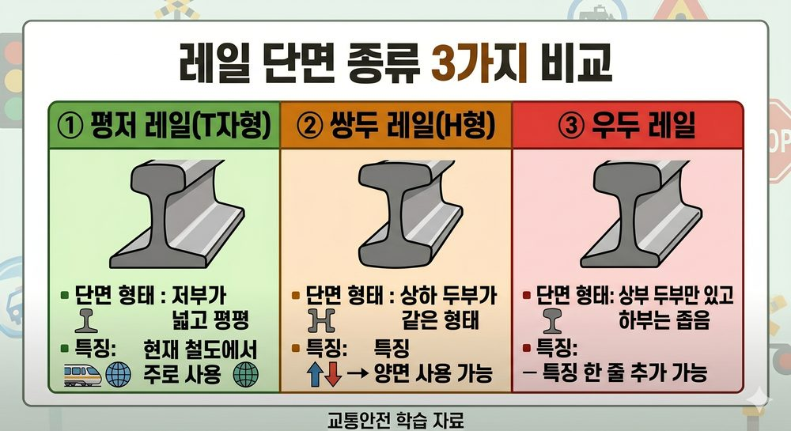

레일은 두부(頭部)·복부(腹部)·저부(底部) 3부분으로 구성된 평저레일(Flat Bottom Rail)이 현재 국내·세계 표준.
50kgN 레일: 공칭(명목) 질량 50 kg/m. 국내 본선에서 가장 많이 사용. 실제 1m당 질량은 약 50.4 kg/m(공칭값과 차이 있음).
60kg 레일: 고속선·중요 간선에 사용. 단면이 50kgN보다 크고 내구성이 높음.
| 용접 방법 | 원리 | 특징 | 적용 |
|---|---|---|---|
| 플래시버트 용접 (Flash Butt) |
전기저항·아크 방전(플래시)으로 레일 단면 가열 후 압접 | 강도·품질 최우수. 공장 작업. 비용 고가. | 공장 생산 장대레일 주용접 |
| 테르밋 용접 (Thermite) |
산화철(Fe₂O₃) + 알루미늄(Al) 반응열(2,500℃↑)로 용강 생성 후 주입·충전 | 현장 시공 가능. 별도 전원 불필요. 속도 빠름. | 현장 이음매 용접 |
| 가스압접 (Gas Pressure) |
산소-아세틸렌 불꽃으로 레일 단면 가열 + 축방향 압력 부가 | 열영향부 넓음. 현장 적용 가능하나 테르밋보다 느림. | 현장 용접(일부) |
| 엔클로즈드 아크 용접 (Enclosed Arc) |
레일 간극을 구리 주형으로 둘러싸고 아크 용접으로 충전 | 큰 간극 보수에 적합. 시공이 비교적 간단. | 레일 손상 부위 보수 |
Q1 정답 ②
50kgN은 공칭값(명목값). 실제 1m당 질량은 약 50.4 kg/m. 국내 본선 표준 레일이며 고속선 전용이 아님.
Q2 정답 ③
테르밋 용접: 산화철(Fe₂O₃)+알루미늄(Al) → 2,500℃ 이상 반응열로 용강 생성 → 레일 접합. 현장에서 별도 전원 없이 시공 가능.
Q3 정답 ②
플래시버트 용접은 전기저항과 플래시(아크 방전)로 레일 단면을 가열·압접하는 방식. 용접 품질·강도가 4종 중 최우수. 공장 생산 장대레일에 주로 적용.